Visas lietotnes · Arkvital
Visas lietotnes, ko esmu izveidojis un publicējis.
56 darbojošās tīmekļa lietotnes, ko Arkvital izveidojis Monreālā. Visas darbojas pārlūkā, nekas nav jāinstalē. Atveriet jebkuru, lai izmēģinātu.
Biznesam 14
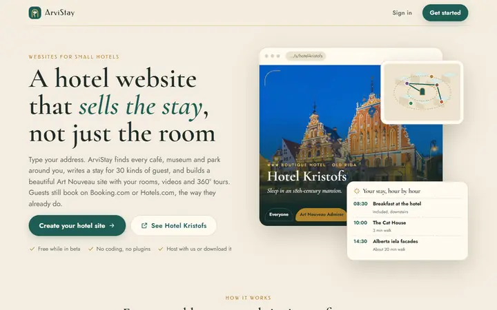
ArviStay
Izveidojiet skaistu jūgendstila vietni savai viesnīcai: numuri, video, 360 grādu tūres, apkaimes 3D karte un stundu plāns uzturēšanās laikam katram viesu tipam.
arvistay.com ↗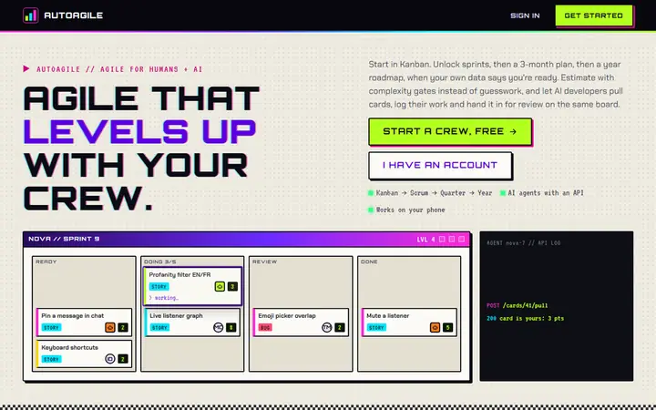
AutoAgile
Kanbans, sprinti un ceļveži cilvēku un MI izstrādātāju komandām. Novērtējumi pēc sarežģītības sliekšņiem, aģentu API un līmeņi, kas atveras, komandai nobriestot.
autoagile.anvil.app ↗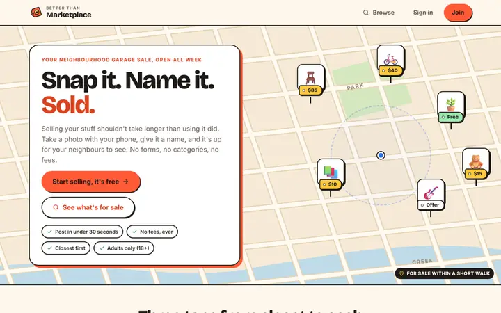
Better Than Marketplace
Pārdodiet nevajadzīgo dažās sekundēs: nofotografējiet ar telefonu, dodiet nosaukumu — gatavs. Bez kategorijām, formām un komisijām. Skatiet, ko kaimiņi pārdod tuvumā.
bettermart.anvil.app ↗Bez maksas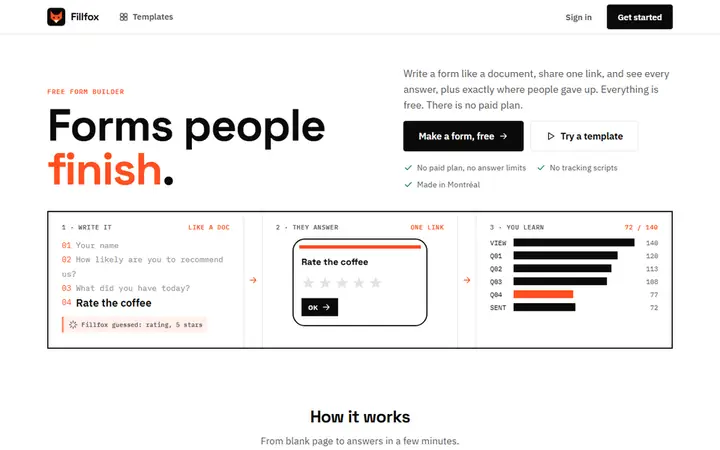
Fillfox
Bezmaksas formu veidotājs: rakstiet formu kā dokumentu, kopīgojiet saiti, skatiet katru atbildi un vietu, kur cilvēki apstājās. Loģika, testi un paraksti iekļauti.
fillfox.anvil.app ↗Bez maksas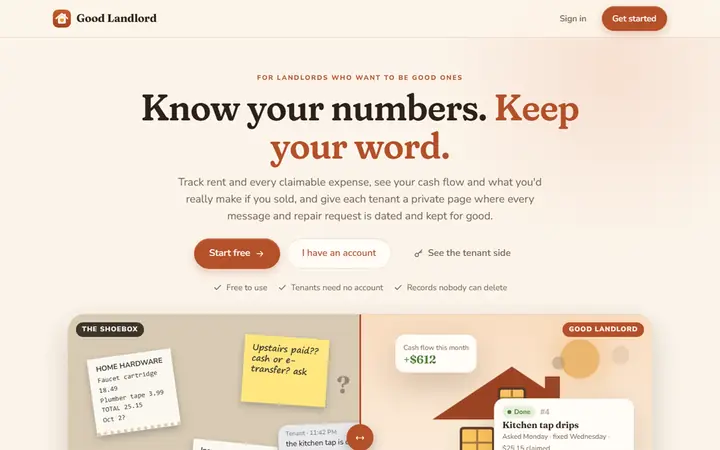
Good Landlord
Sekojiet īres maksām, izdevumiem, hipotēkai un ilgtermiņa peļņai no izīrētajiem mājokļiem un dodiet īrniekiem privātu, pret viltošanu aizsargātu ziņu un remontu reģistru.
good-landlord.anvil.app ↗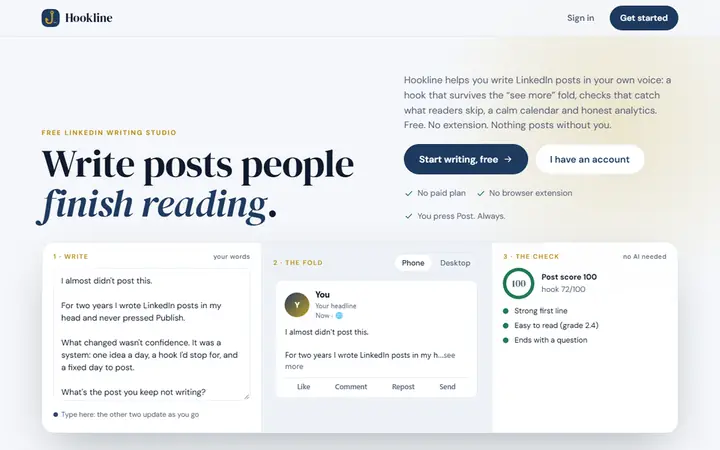
Hookline
Bezmaksas LinkedIn rakstīšanas studija: āķi, kas izdzīvo aiz “rādīt vairāk”, ieraksti jūsu balsī, mierīgs kalendārs un godīga analītika. MI pēc izvēles.
hookline.anvil.app ↗Bez maksas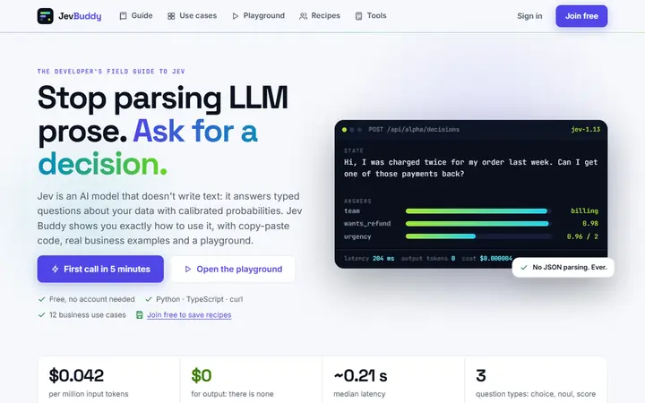
Jev Buddy
Draudzīgs izstrādātāja ceļvedis par Jev, MI lēmumu modeli: izvēle, noul un vērtējums, izskaidroti ar kodu, biznesa piemēriem, testēšanas vidi un izmaksu kalkulatoru.
jev-buddy.anvil.app ↗Bez maksas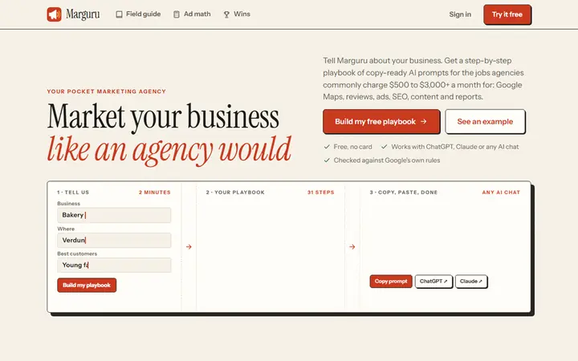
Marguru
Aprakstiet savu uzņēmumu un saņemiet lietošanai gatavas MI uzvednes reklāmām, Google Maps, SEO, saturam un pārskatiem tādā secībā, kādā to darītu reklāmas aģentūra.
marguru.anvil.app ↗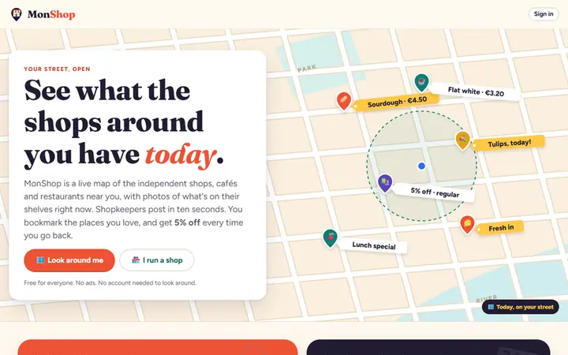
MonShop
Skatiet, kas šodien ir pieejams neatkarīgajos veikalos, kafejnīcās un restorānos jūsu tuvumā, pēc īstiem plauktu foto un piedāvājumiem, un saņemiet 5 % atlaidi tur, kur esat pastāvīgais klients.
monshop.ca ↗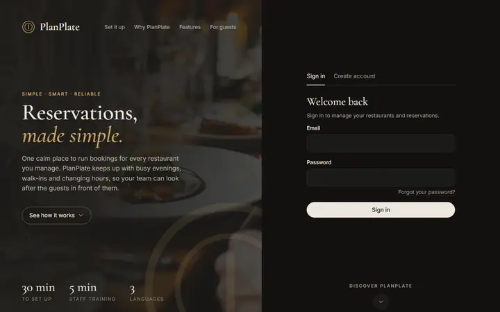
PlanPlate
Pārvaldiet rezervācijas visos savos restorānos: darba laiks, zāles plāns ar vilkšanu un nomešanu, automātiska apstiprināšana, ēdienkartes, īpašie piedāvājumi, pasākumi un rezervācijas forma jūsu vietnei.
planplate.com ↗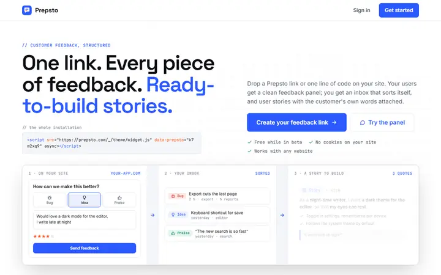
Prepsto
Atsauksmju panelis, ko pievienojat jebkurai vietnei ar vienu saiti. Vāciet, šķirojiet un pārvērtiet klientu atsauksmes lietotāju stāstos, un ļaujiet cilvēkiem sekot, kas notiek ar viņu ideju.
prepsto.com ↗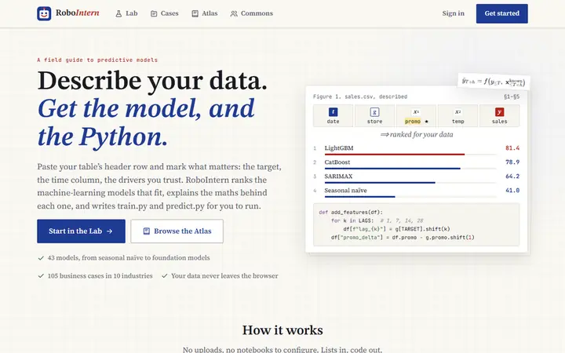
RoboIntern
Aprakstiet savus datus kā kolonnu sarakstu; RoboIntern sarindo piemērotos mašīnmācīšanās modeļus, izskaidro matemātiku un uzraksta Python kodu apmācībai un prognozēm.
robointern.com ↗
Sheetsmith
Augšupielādējiet Excel darbgrāmatu ar tās tabulām, formulām, noteikumiem un VBA makro un saņemiet tīmekļa lietotni un nelielu Python serveri, kas darbojas jūsu lokālajā tīklā.
sheetsmith.anvil.app ↗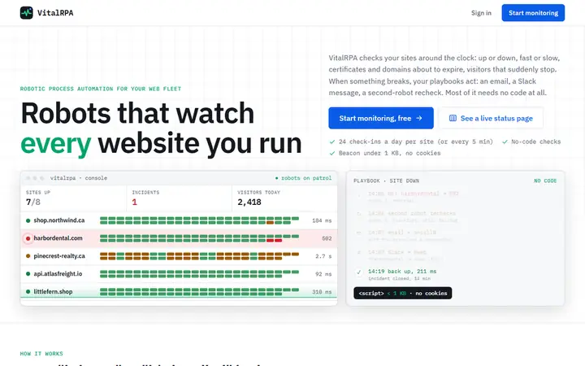
VitalRPA
Vietņu roboti aizņemtām komandām: pieejamības pārbaudes katru stundu, SSL un domēnu termiņu uzraudzība, apmeklētāju bāka zem 1 KB un scenāriji, kas rīkojas, kad kaut kas salūst.
vitalrpa.com ↗
Uzzināt ko jaunu 10
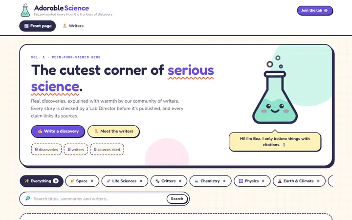
Adorable Science
Sirsnīgas, labi pamatotas zinātnes ziņas, ko raksta kopiena. Rakstu var uzrakstīt ikviens; laboratoriju vadītāji pārskata katru pirms publicēšanas.
adorablescience.com ↗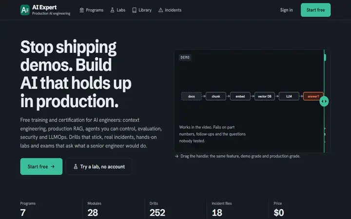
AI Expert
Bezmaksas MI inženierijas apmācība un sertifikācija: konteksta inženierija, RAG produkcijā, aģenti, novērtēšana, drošība un LLMOps, ar vingrinājumiem, laboratorijas darbiem un īstu incidentu lietām.
aiexpert.anvil.app ↗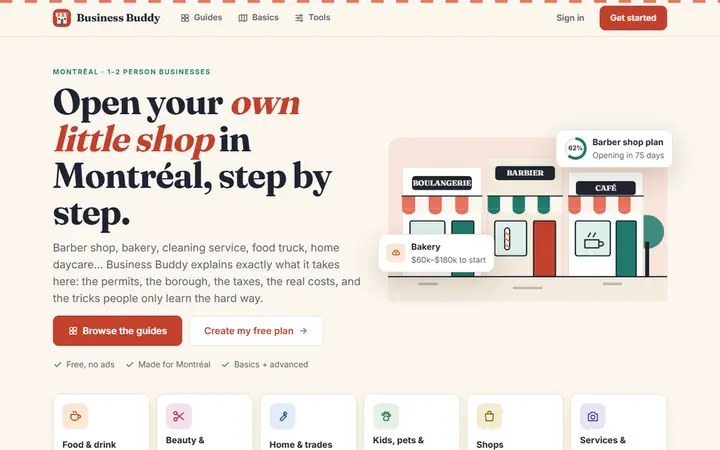
Business Buddy
Kā atvērt mazu uzņēmumu Monreālā, soli pa solim: bārddzinis, maiznīca, kafejnīca, uzkopšana, amati un citi. Atļaujas, nodokļi, izmaksas un personīgs uzsākšanas plāns.
business-buddy.anvil.app ↗Bez maksas
C-Suite Coach
Apmācība augstākajai vadībai: reāli biznesa gadījumi, valdes izaicinājumi un vingrinājumi ar intervālu atkārtošanu. Iegūstiet C-Suite Coach Institute sertifikātus.
csuite-coach.anvil.app ↗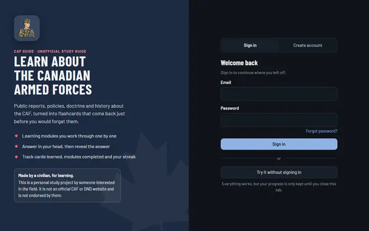
CAF Guide
Neoficiāla mācību lietotne par Kanādas Bruņotajiem spēkiem: aktīvās atsaukšanas kartītes par dienesta pakāpēm, struktūru, apmācību, vēsturi un saīsinājumiem, ar ikdienas atkārtošanu.
caf-guide.anvil.app ↗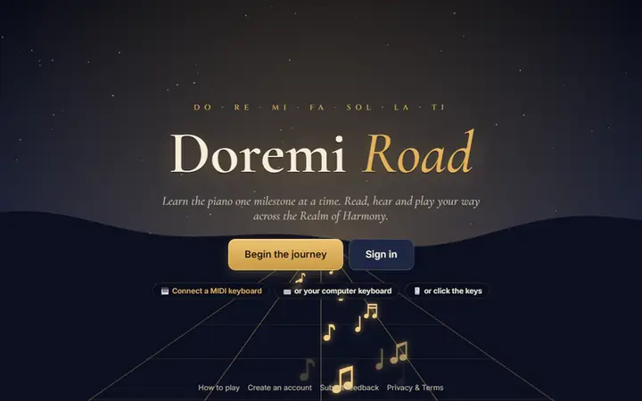
Doremi Road
Klavierspēles mācību spēle: spēlējiet notis, akordus un harmoniju virknes ar MIDI klaviatūru, datora taustiņiem vai skārienekrānu, trenējiet dzirdi un iekarojiet Harmonijas valstību.
doremiroad.com ↗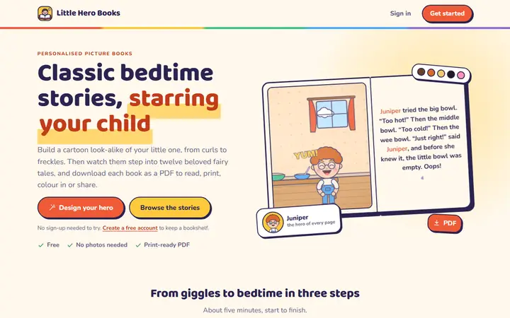
Little Hero Books
Izveidojiet sava bērna multfilmas līdzinieku, tad lasiet vai lejupielādējiet PDF formātā klasiskas pasakas ar viņu galvenajā lomā. Astoņas pārstāstītas pasakas 3–6 gadus veciem bērniem.
little-hero-books.anvil.app ↗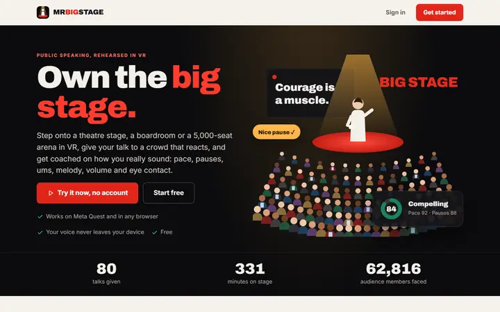
MrBigStage
Uzkāpiet uz lielas skatuves VR, uzstājieties 3D auditorijas priekšā un saņemiet balss padomus: temps, pauzes, liekvārdi, intonācija, skaļums un acu kontakts.
mrbigstage.anvil.app ↗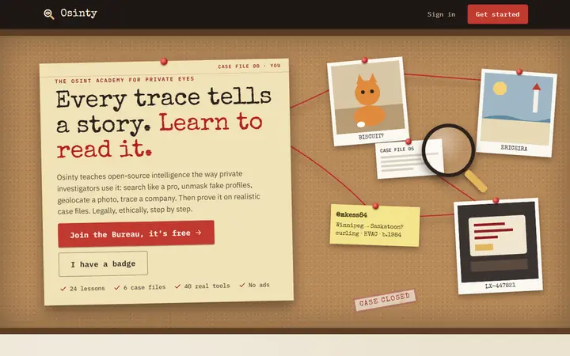
Osinty
Apgūstiet atvērto avotu izlūkošanu (OSINT) tā, kā to izmanto privātdetektīvi: 24 nodarbības, reālistiskas izdomātas lietas, rīku komplekts un jūsu pašu lietu žurnāls.
osinty.anvil.app ↗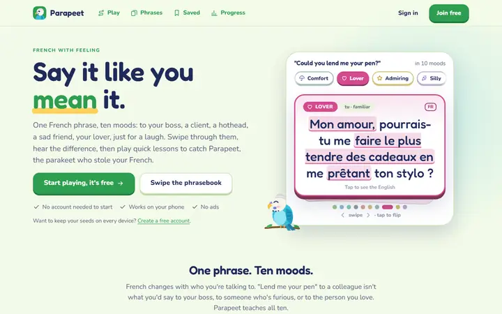
Parapeet
Mācieties ikdienas frāzes franču, spāņu un itāļu valodā desmit noskaņās: priekšniekam, klientam, bēdīgam draugam, mīļotajam. Pavelciet, izejiet īsas nodarbības, saglabājiet sēriju.
parapeet.com ↗Bez maksas
Mūzika, video un māksla 10
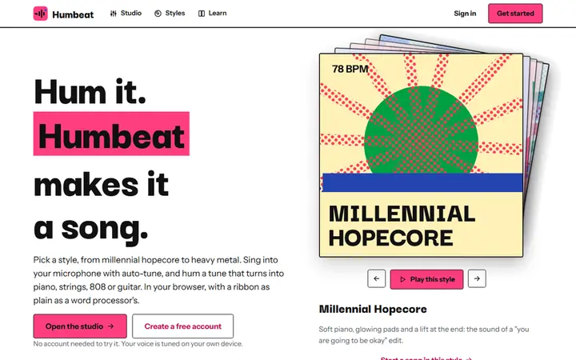
Humbeat
Radiet jebkuru dziesmu pārlūkā: izvēlieties stilu no hopecore līdz smagajam metālam, ierakstiet balsi ar auto-tune un nodungojiet melodiju, kas kļūst par jebkuru instrumentu.
humbeat.anvil.app ↗Bez maksas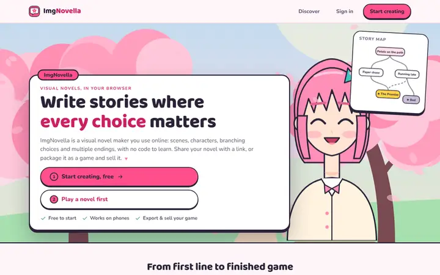
ImgNovella
Veidojiet vizuālos romānus pārlūkā: ainas, tēli, sazaroti izvēles punkti un vairākas beigas. Kopīgojiet saiti vai eksportējiet spēlējamu HTML spēli pārdošanai. Bez programmēšanas.
imgnovella.anvil.app ↗
Make Your Own Clothes
Konstruējiet piegrieztnes pēc mēriem, pārzīmējiet tās, šujiet 3D uz manekena ar saviem izmēriem un sekojiet soli pa solim šūšanas grāmatai.
make-my-clothes.anvil.app ↗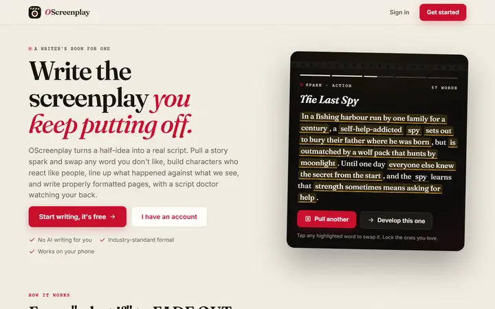
OScreenplay
Uzrakstiet scenāriju, ko visu laiku atliekat: stāstu dzirksteles remiksēšanai, tēli, kas reaģē kā cilvēki, divas laika līnijas, struktūras ceļveži un īsts scenāriju redaktors.
oscreenplay.com ↗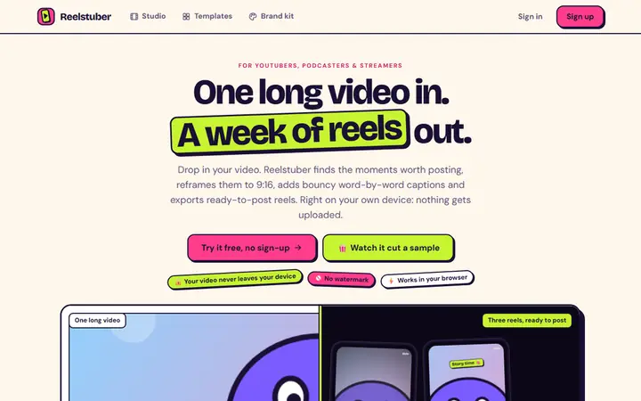
Reelstuber
Iemetiet garu video: Reelstuber atrod labākos mirkļus, pārkadrē tos 9:16 formātā, pievieno vārdu pa vārdam subtitrus un eksportē MP4 rullīšus. Nekas netiek augšupielādēts.
reelstuber.anvil.app ↗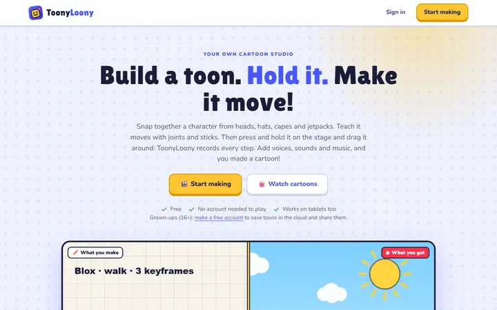
ToonyLoony
Veidojiet multfilmu tēlus, iekustiniet tos ar locītavām un kociņiem, tad satveriet un velciet, lai ierakstītu tos kustībā savā multfilmā ar balsīm un mūziku.
toonyloony.com ↗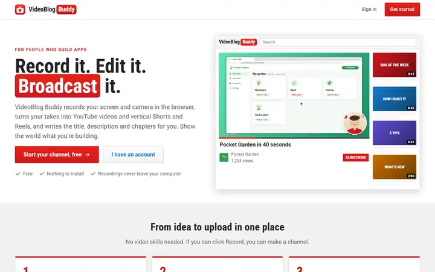
VideoBlog Buddy
Ierakstiet ekrānu un kameru, montējiet un publicējiet YouTube video, Shorts un Reels par lietotnēm, ko veidojat. Viss pārlūkā; ieraksti nekad nepamet jūsu datoru.
videoblog-buddy.anvil.app ↗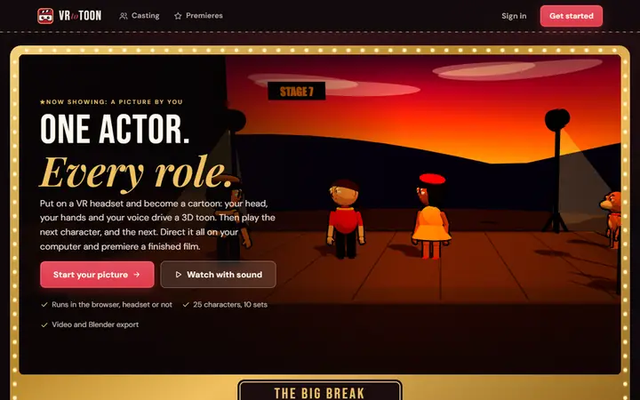
VRtoToon
Veidojiet 3D multfilmas pārlūkā: atveidojiet katru tēlu pats VR brillēs vai ar peli, režisējiet datorā, eksportējiet video vai Blender failus.
vrtotoon.anvil.app ↗Bez maksas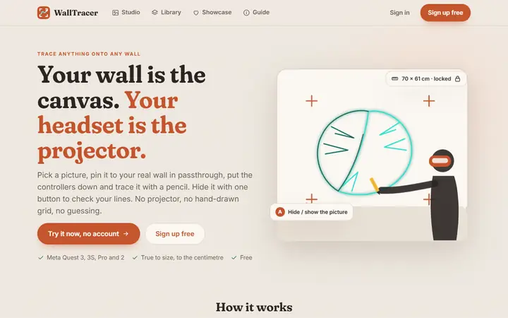
WallTracer
Piespraudiet attēlu pie savas īstās sienas ar Quest brillēm, nolieciet kontrolierus un apvelciet to ar zīmuli. Paslēpiet to ar vienu pogu, lai pārbaudītu līnijas.
walltracer.anvil.app ↗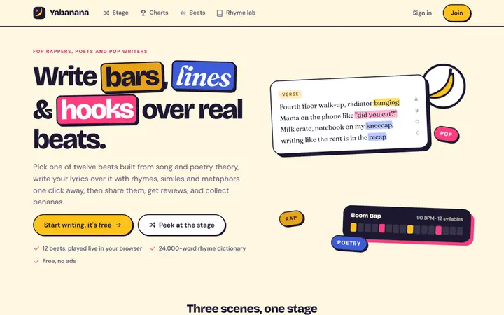
Yabanana
Rakstiet rindas, dzejoļus un piedziedājumus uz 12 bītiem, kas veidoti pēc dziesmu un dzejas teorijas. Atskaņas, salīdzinājumi un metaforas pa rokai; kopīgojiet tekstus, saņemiet atsauksmes un balsis.
yabanana.com ↗
Veselība un ikdiena 10
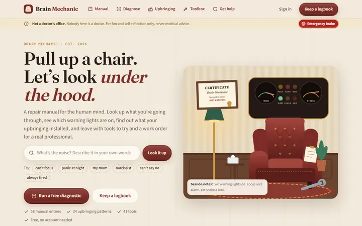
Brain Mechanic
Prāta remonta rokasgrāmata: uzziniet par UDHS, trauksmi, narcismu un audzināšanas modeļiem, veiciet bezmaksas pašpārbaudes un atrodiet rīkus. Nav medicīnisks padoms.
brain-mechanic.anvil.app ↗Bez maksas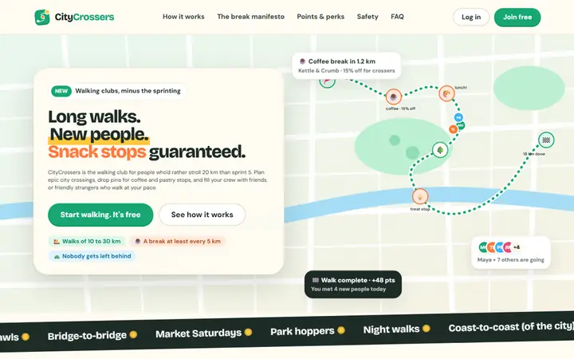
CityCrossers
Pastaigu klubs tiem, kas labāk noies 20 km nekā noskries 5: pievienojieties grupu pastaigām, plānojiet maršrutus ar kafejnīcu pieturām, iepazīstieties ar jauniem cilvēkiem un krājiet punktus un priekšrocības.
citycrossers.com ↗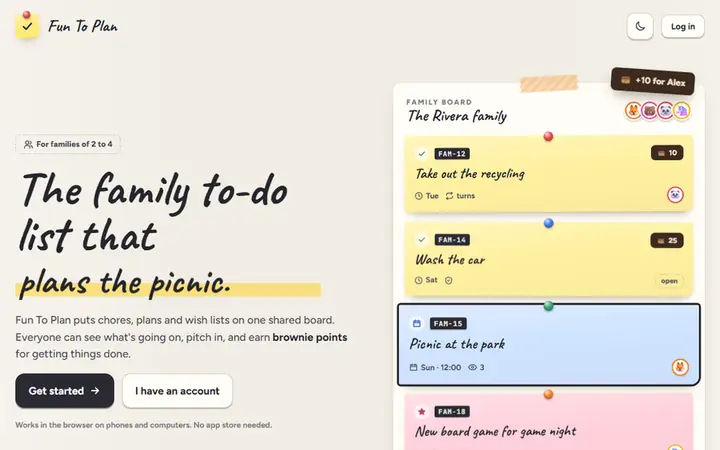
Fun To Plan
Kopīgs ģimenes dēlis 2–4 cilvēkiem: mājas darbi, pasākumi un vēlmju saraksti, ģimenes tērzēšana, atkārtoti uzdevumi pēc kārtas un bonusa punkti par paveikto.
funtoplan.com ↗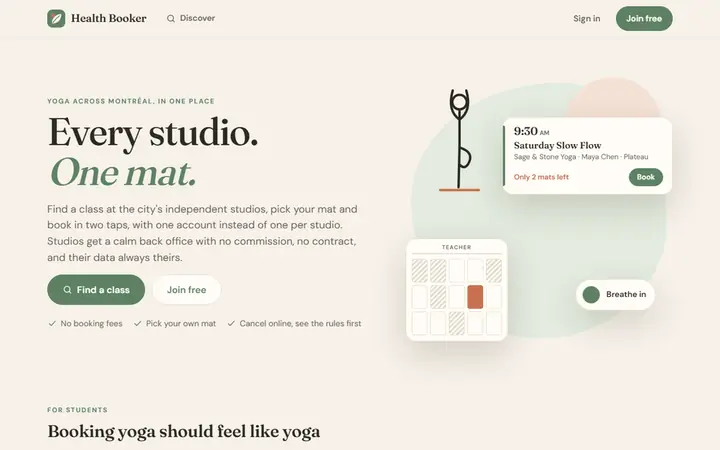
Health Booker
Atrodiet un rezervējiet jogas nodarbības Monreālas studijās ar vienu kontu. Studijas iegūst grafikus, abonementus, skolotāju aizvietošanu un algas, bez komisijas un līguma.
health-booker.anvil.app ↗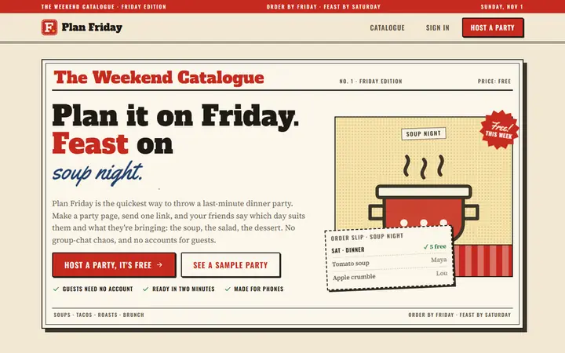
Plan Friday
Piektdien saplānojiet pēdējā brīža nedēļas nogales vakariņas: nosūtiet vienu saiti, viesi izvēlas dienu un pasaka, ko atnesīs, un jūs nofiksējat labāko dienu. Viesiem konti nav vajadzīgi.
planfriday.com ↗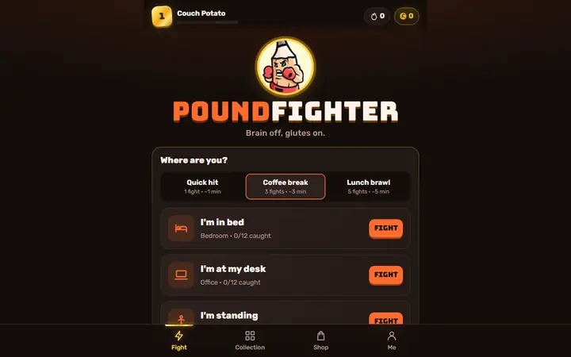
PoundFighter
Mikrotreniņi darba dienai, pārvērsti monstru kolekcionēšanas spēlē: veiciet atkārtojumus gultā, pie galda vai stāvus, skaitiet tos ar balsi un noķeriet 36 monstrus.
poundfighter.com ↗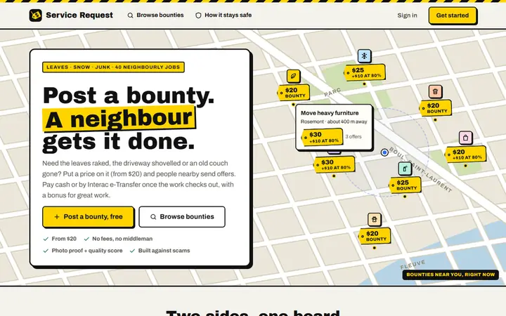
Service Request
Izsludiniet atlīdzību un saņemiet kaimiņa palīdzību: lapas, sniegs, krāmi, pārvākšanās un vēl 40 darbi no 20 $. Maksājiet skaidrā naudā vai ar Interac pārskaitījumu, ar kvalitātes bonusu.
service-request.anvil.app ↗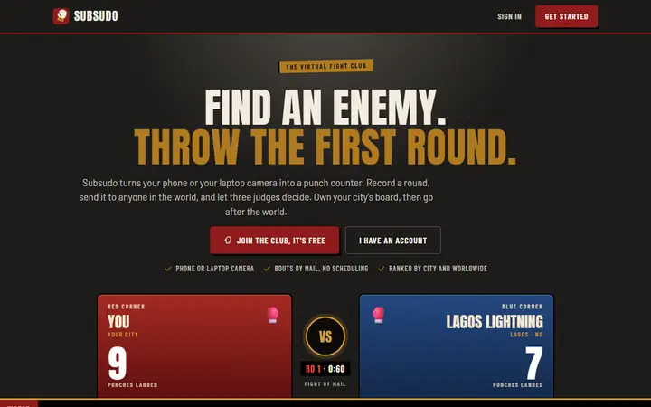
Subsudo
Virtuālais cīņas klubs: ierakstiet ēnu boksa raundu ar telefona vai klēpjdatora kameru, nosūtiet kā izaicinājumu un kāpiet pasaules un pilsētas reitingos.
subsudo.com ↗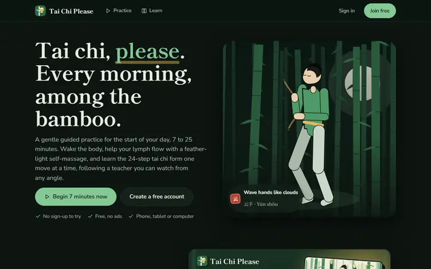
Tai Chi Please
Maigs rīta taiči bambusu mežā: vadītas nodarbības ar 3D skolotāju, cigun, limfas pašmasāža un 24 kustību forma. Sāciet bez reģistrācijas.
tai-chi-please.anvil.app ↗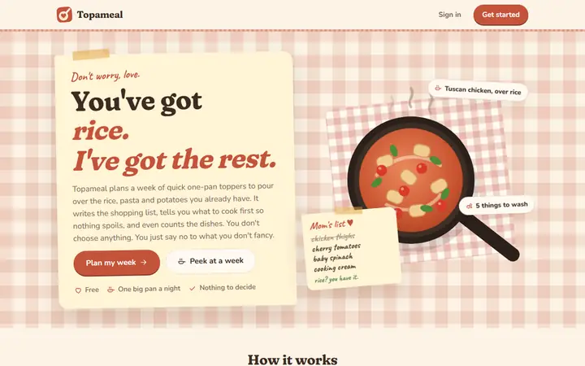
Topameal
Vakariņas izlemtas. Topameal izvēlas ātrus vienas pannas ēdienus rīsiem, makaroniem un kartupeļiem, kas jums jau ir, un uzraksta nedēļas iepirkumu sarakstu.
topameal.com ↗
Spēles un izklaide 8
Busy Bun
Spēlējiet ar mazu bao bulciņu kulinārā ceļojumā: kārtojiet kaimiņu darbus, piepildiet bulciņu, iznīciniet kaitēkļu ligzdas un nokļūstiet līdz tvaicētājam cauri 16 pasaulēm un 118 līmeņiem.
busybun.com ↗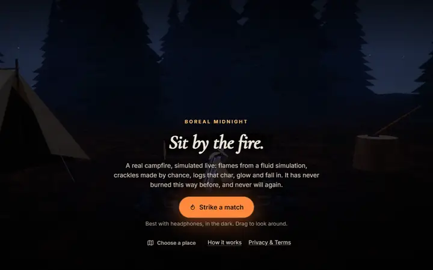
Campfire
Dzīvi simulēts ugunskurs: liesmas no šķidrumu simulācijas, nejauši sprakšķi, pagales, kas pārogļojas un iekrīt. Trīs nometnes, miega taimeris, bez reģistrācijas.
campfire.anvil.app ↗Bez maksas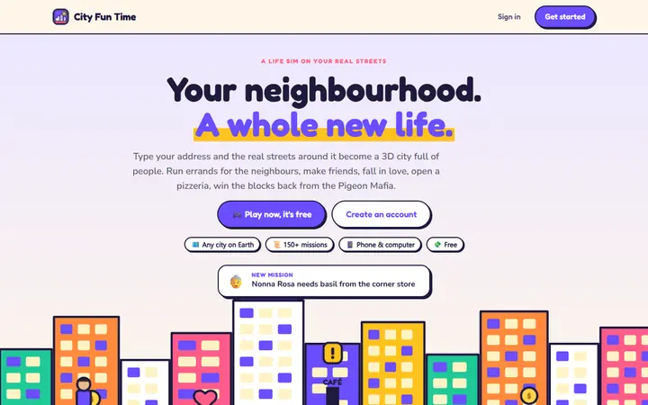
City Fun Time
Jūsu īstā apkaime, pārbūvēta 3D pēc kartes. Kārtojiet darbus, iegūstiet draugus, iemīlieties, atveriet uzņēmumus un pārņemiet kvartālus. Vairāk nekā 150 misiju īstās vietās.
city-fun-time.anvil.app ↗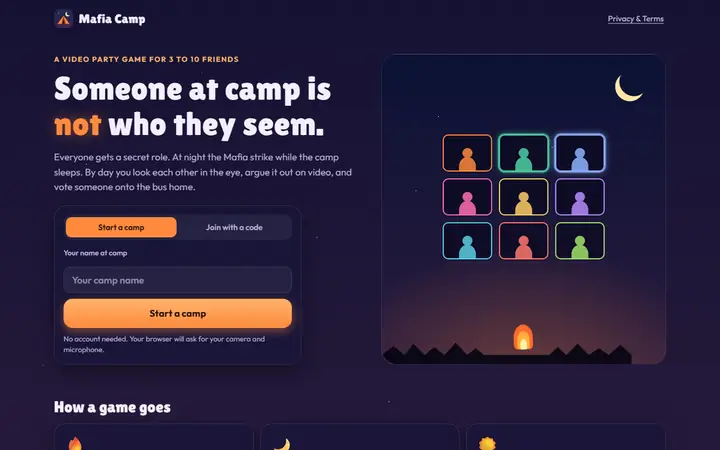
Mafia Camp
Video ballītes spēle 3–10 draugiem: visi pievienojas vienam video zvanam pārlūkā, saņem slepenu lomu un spēlē Mafiju Moonlake nometnē. Bez kontiem.
mafia-camp-game.anvil.app ↗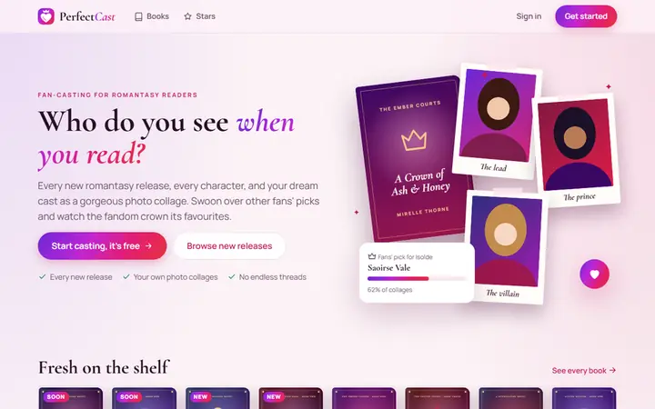
PerfectCast
Izvēlieties aktierus jaunākajām romantasy grāmatām: katrs tēls, jūsu sapņu slavenību kolāža un visa fanu kopiena izvēle. Sajūsminieties par citu lasītāju izvēlēm un komentējiet tās.
perfectcast.anvil.app ↗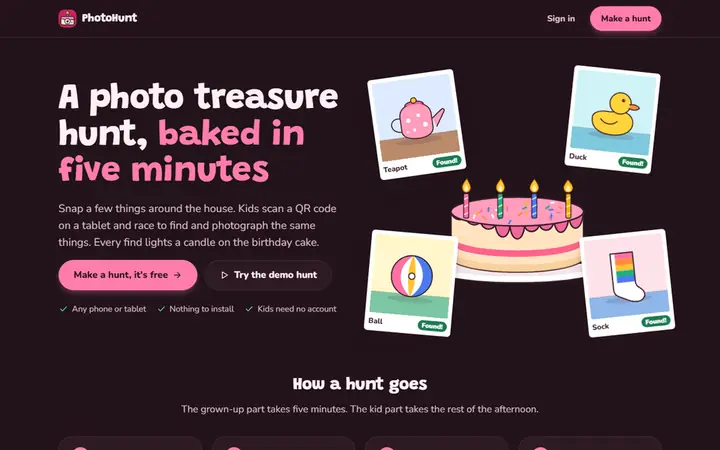
PhotoHunt
Izveidojiet foto dārgumu medības piecās minūtēs: nofotografējiet lietas mājās, bērni noskenē QR kodu un sacenšas, kurš tās ātrāk atradīs un nofotografēs.
photohunt.anvil.app ↗Bez maksas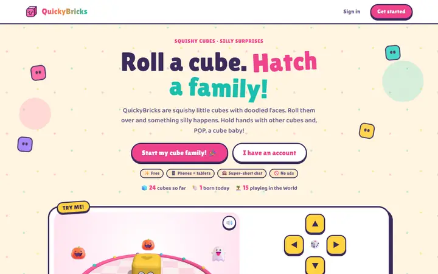
QuickyBricks
Ripiniet, zīmējiet un izperiet jautru mīkstu 3D kubiņu ģimeni. Sadodieties rokās ar citu spēlētāju kubiņiem, lai rastos kubiņu mazuļi. Jautra pārlūka spēle, ko spēlēt kopā ar pieaugušo.
quickybricks.com ↗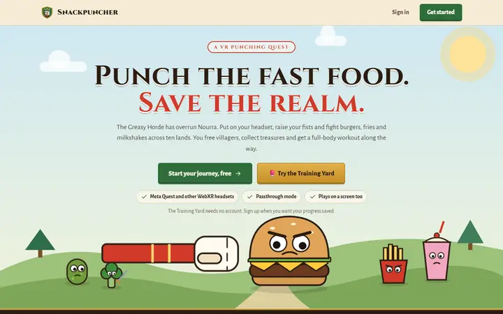
Snackpuncher
VR boksa piedzīvojums Meta Quest un WebXR brillēm: cīnieties pret multfilmu ātrās ēdināšanas ordu desmit zemēs. Katra cīņa ir treniņš. Var spēlēt arī uz ekrāna.
snackpuncher.anvil.app ↗
Noderīgi rīki 4
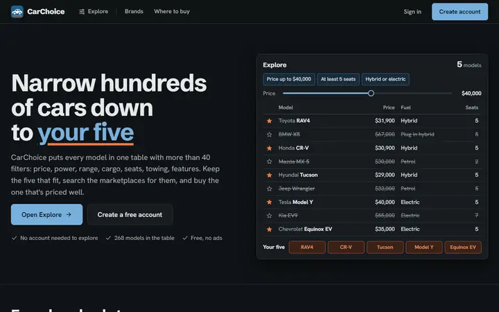
CarChoice
Atlasiet 268 automašīnu modeļus pēc cenas, jaudas, nobraukuma, bagāžnieka, sēdvietām, vilkšanas jaudas un aprīkojuma, paturiet piecus, meklējiet sludinājumu vietnēs un atrodiet labi novērtētu piedāvājumu.
carchoice.anvil.app ↗Bez maksas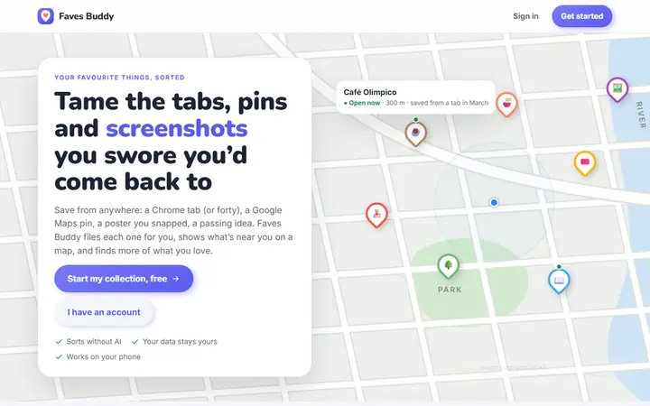
Faves Buddy
Savaldiet atvērtās cilnes, kartes atzīmes, ekrānuzņēmumus un idejas. Faves Buddy tās sakārto bez MI, parāda, kas ir tuvumā, un atrod vēl ko jums tīkamu.
faves-buddy.anvil.app ↗Logsteps
Izstaigājiet istabu ar telefonu un iegūstiet 3D modeli, ko var atskaņot, izmērīt, papildināt ar piezīmēm, kopīgot ar saiti un rediģēt datorā.
logsteps.com ↗Robo Presence
Uzbūvējiet robotu ar kameru uz riteņiem no Raspberry Pi, Arduino vai veca telefona, uzstādiet ar vienu komandu un vadiet to tiešraidē no jebkura pārlūka caur WebRTC.
robo-presence.anvil.app ↗
Vēlaties kādu no šīm savai komandai?
Parunāsim par to, kas jums vajadzīgs.
Lielākā daļa sākās kā viena cilvēka problēma. Ja jums ir process, kas salūst, vai ideja, pie kuras arvien atgriežaties, pastāstiet man.
Parunāsim ↗